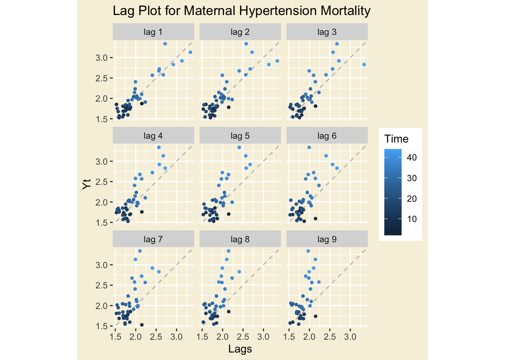
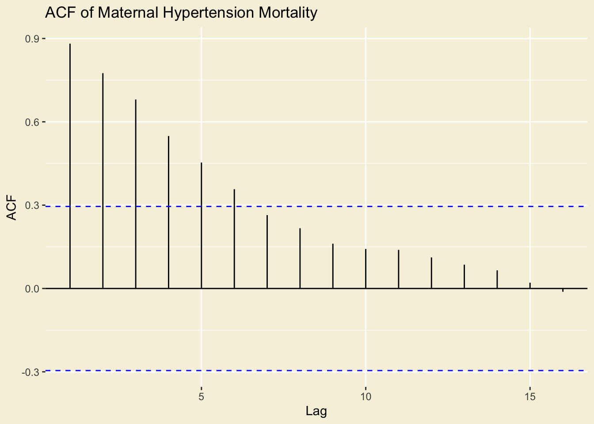
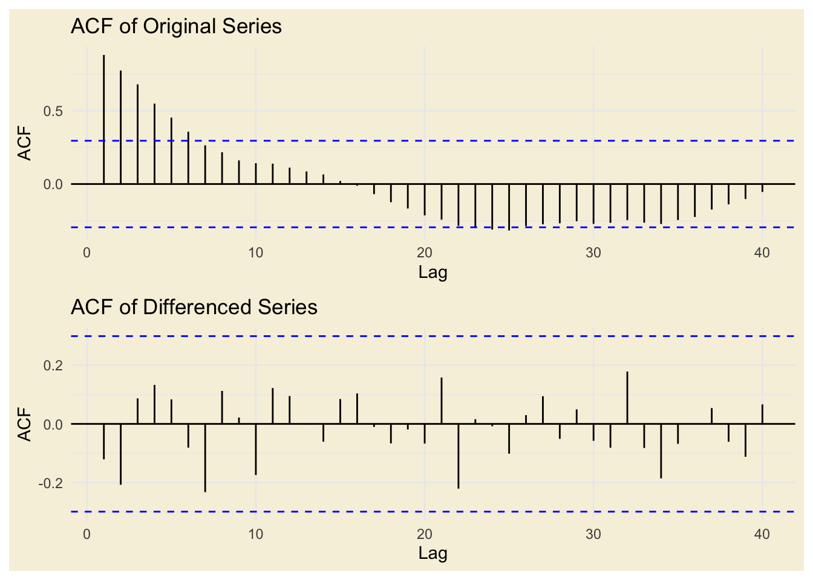
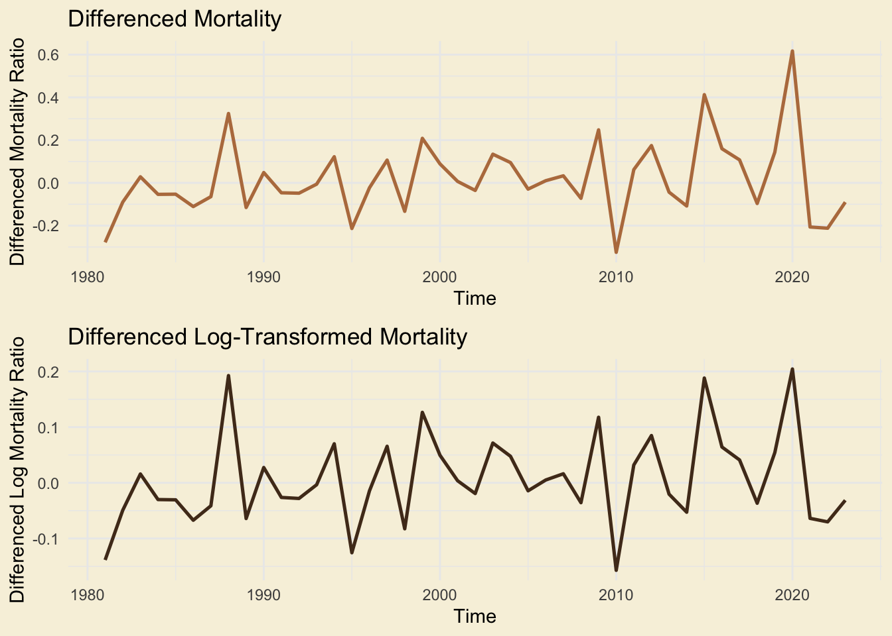
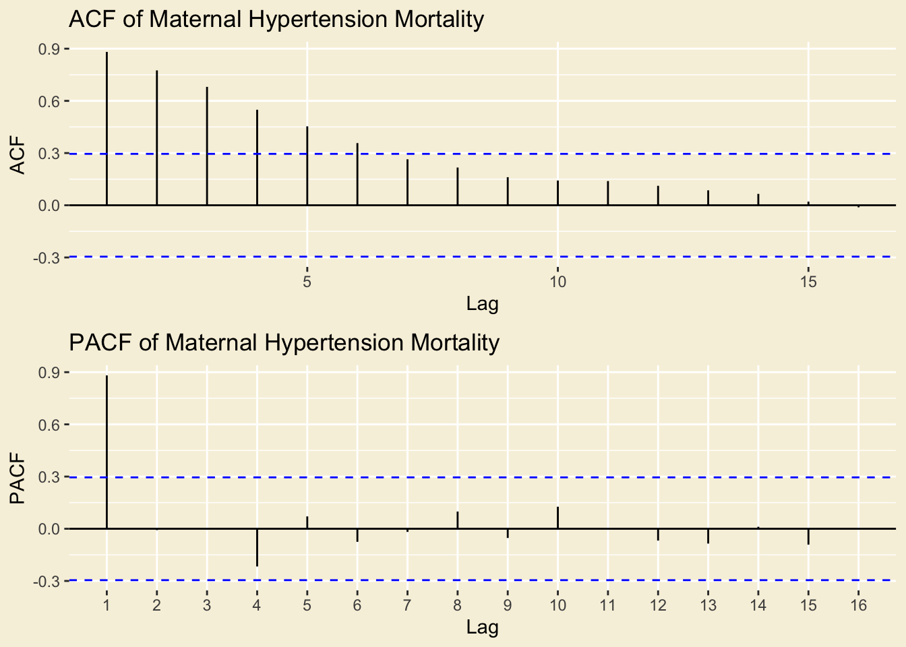

Mortality from Maternal Hypertensive Disorders (IHME)
The World Health Organization (WHO) estimates that about 300,000 women globally died from pregnancy-related deaths in 2017. On average, that’s about 800 each day.
According to the ICD-11, maternal deaths are defined as the deaths of women while pregnant or within 42 days of termination of pregnancy, from pregnancy-related causes, but excluding accidental or incidental causes of death.
Here, we perform a time series analysis of data collected from the Institute for Health Metrics and Evaluation (2024) (link) on the proportion of maternal deaths — defined as deaths from pregnancy-related causes of women while pregnant or within 42 days of termination of pregnancy, not including accidental or incidental causes — from maternal conditions caused by hypertensive disorders, such as gestational hypertension and preeclampsia. The data was originally sourced from the Our World In Data Maternal Mortality Report, which tracks maternal deaths and their causes and prevalence around the globe.
The below time series analysis uses annual data collected between 1980 and 2023 and aims to fit an ARIMA (Autoregressive Integrated Moving Average) model to the data in order to understand the underlying autocorrelation in the data and use these temporal dynamics to accurately forecast the future of maternal mortality due to hypertension.
Click to see code
# Read in dataihme <-read.csv("time_series/data/IHME-2023.csv")# select relevant columns, order by yearihme <- ihme |>select(year, val)ihme$year <-as.numeric(ihme$year)# orderihme <- ihme |>arrange(year) |>rename(mortality = val)head(ihme)
plot <-ggplot(ihme, aes(year, mortality)) +geom_point(color ="#A8BBA3", size =0.9) +geom_line(color ="#A8BBA3", size =0.8) +labs(title ="Maternal Mortality Ratio from Hypertensive Disorders\nin the United States, 1980-2023",x ="Year",y ="Mortality Ratio") +theme_minimal() +theme(plot.background =element_rect(fill ='#F7F1DE', color =NA),panel.background =element_rect(fill ='#F7F1DE', color =NA),text =element_text(color ='#B87C4C'),axis.text =element_text(color ='#B87C4C'),axis.title =element_text(color ='#B87C4C'),plot.title =element_text(color ='#B87C4C'),plot.subtitle =element_text(color ='#B87C4C'),legend.text =element_text(color ='#B87C4C'),legend.title =element_text(color ='#B87C4C'),strip.text =element_text(color ='#B87C4C'),panel.grid.major =element_blank(),panel.grid.minor =element_blank())
Warning: Using `size` aesthetic for lines was deprecated in ggplot2 3.4.0.
ℹ Please use `linewidth` instead.
Click to see code
ggsave("img/maternal_mortality_timeseries.png", plot = plot, width =7, height =4.5, dpi =300, bg ="#F7F1DE")# manual title because of ggplotlyggplotly(plot) |>layout(title =list(text =paste0("Maternal Mortality Ratio from Hypertensive Disorders in the United States, 1980-2023","<br><span style='font-size:12px;'>Deaths per 100,000 Live Births Due to Maternal Hypertensive Disorders</span>" )))
The above line plot shows the series of maternal mortality rate caused by maternal hypertensive disorders like gestational hypertension and preeclampsia. The frequency of the data is yearly covering a 43-year time span, and shows an increasing rate of proportion of maternal deaths caused by hypertensive disorders over time. Tracking the proportion of deaths from these disorders rather than the number of deaths allows us to understand the impact of the disorders while controlling for general population growth.
Looking at the plot, there are a couple of important points of interest. The first is a significant and steady decrease in the proportion of deaths caused by maternal hypertension between 1980 and 1990, which was likely caused by general improvements in maternal healthcare prenatal care in the US during that decade.
There has also been a significant increase in the mortality ratio in the last decade, with a particularly high spike in 2020. This spike coincides with the COVID-19 pandemic, which disrupted healthcare serives, limited access to prenatal care, and increased things like stress and comorbidities, all of which could have led to higher maternal mortality rates.
In the years following 2020, there has been a continuing decrease, which likely reflects the healthcare systems recovery from the pandemic.
Decomposition
Click to see code
ihme_ts <-ts(ihme$mortality, start =1980, frequency =1)
Since we can’t decompose annual data, we perform a moving average calculation to extract the trend component.
Click to see code
# centered moving average (NA at edges is expected)trend_mortality <-ma(ihme_ts, order =6, centre =TRUE)plot_ly(x =~time(ihme_ts)) |>add_lines(y =~as.numeric(ihme_ts), name ="Original", line =list(color ="#A8BBA3")) |>add_lines(y =~as.numeric(trend_mortality), name ="Trend (MA)", line =list(color ="#B87C4C", dash ="dash")) |>layout(title ="Maternal Mortality: Original vs Trend", xaxis =list(title ="Year"), yaxis =list(title ="Mortality Ratio"),plot_bgcolor ='#F7F1DE',paper_bgcolor ='#F7F1DE')
The moving average calculation produces a smoother line without the randomness of the original series, showing the increasing trend of the data more clearly.
Lag Plots
Click to see code
gglagplot(ihme_ts, do.lines=FALSE) +xlab("Lags") +ylab("Yt") +ggtitle("Lag Plot for Maternal Hypertension Mortality") +theme(plot.background =element_rect(fill ='#F7F1DE', color =NA),panel.background =element_rect(fill ='#F7F1DE', color =NA) )

The lag plot shows the tighest and most elongated pattern along the 45-degree line at lag 1, which indicates a strong autocorrealtion between successive values, implying a strong relationship between current and immediate past values in the dataset. As the lags increase, the points become more scattered and dispersed, which indicates decreasing correlation between current and past values.
ACF and PACF
Click to see code
ihme_acf <-ggAcf(ihme_ts, main ="ACF of Maternal Hypertension Mortality") +theme(plot.background =element_rect(fill ='#F7F1DE', color =NA),panel.background =element_rect(fill ='#F7F1DE', color =NA) )ihme_acf

The ACF plot shows high autocorrelation at many lags with a slow, gradual decay in the magnitude of that autocorrelation. This is an indicator that the data are non-stationary, and a hint that we may need to difference the data.
Augmented Dickey-Fuller Test
Click to see code
adf.test(ihme_ts)
Augmented Dickey-Fuller Test
data: ihme_ts
Dickey-Fuller = -1.3004, Lag order = 3, p-value = 0.8508
alternative hypothesis: stationary
The ADF Test returns a p-value of.8508. This value is very high and well above the significance level of 0.05, so we fail to reject the null hypothesis, and can therefore conclude that the series is non-stationary.
The results from an ADF test alone can at times be unreliable, but this result combined with out observations of the ACF plot above provide strong evidence that our data is not stationary.
Differencing
Click to see code
diff_ihme <-diff(ihme_ts)# Plot original vs. differencedacf_plot_1 <-ggAcf(ihme_ts, 40) +ggtitle("ACF of Original Series") +theme_minimal() +theme(plot.background =element_rect(fill ='#F7F1DE', color =NA),panel.background =element_rect(fill ='#F7F1DE', color =NA) )acf_plot_2 <-ggAcf(diff_ihme, 40) +ggtitle("ACF of Differenced Series") +theme_minimal() +theme(plot.background =element_rect(fill ='#F7F1DE', color =NA),panel.background =element_rect(fill ='#F7F1DE', color =NA) )# Display plots side by side w/patchwork(acf_plot_1 / acf_plot_2) &plot_annotation(theme =theme(plot.margin =margin(0, 0, 0, 0)))

As evident in the ACF plots of the original and first-differenced data above, first-order differencing significantly reduces the autocorrelation across all lags. Therefore, first-order differencing is necessary for this data. First-order is sufficient and the data does not need second-order differencing.
Log Transformation
Click to see code
library(patchwork)ihme$log_mortality <-log(ihme$mortality)log_ihme_ts <-ts(ihme$log_mortality, start =1980, frequency =1)# Difference the Datadiff_ihme <-diff(ihme_ts)diff_log_ihme <-diff(log_ihme_ts)# Plots for differenced datap1 <-ggplot() +geom_line(aes(x =time(diff_ihme), y = diff_ihme), size =0.9, color ="#B87C4C") +labs(title ="Differenced Mortality",x ="Time",y ="Differenced Mortality Ratio") +theme_minimal() +theme(plot.background =element_rect(fill ='#F7F1DE', color =NA),panel.background =element_rect(fill ='#F7F1DE', color =NA) )p2 <-ggplot() +geom_line(aes(x =time(diff_log_ihme), y = diff_log_ihme), size =0.9, color ="#51361f") +labs(title ="Differenced Log-Transformed Mortality",x ="Time",y ="Differenced Log Mortality Ratio") +theme_minimal() +theme(plot.background =element_rect(fill ='#F7F1DE', color =NA),panel.background =element_rect(fill ='#F7F1DE', color =NA) )# Combine plots(p1 / p2) &plot_annotation(theme =theme(plot.margin =margin(0, 0, 0, 0)))

The original series did not visually show extreme skew, outliers, or multiplicative relationship, but we performed a log-transformation anyway to confirm. The results of this above confirm that a log transformation is not necessary for this data.
ACF/PACF to identify ARIMA orders
Click to see code
ihme_acf <-ggAcf(ihme_ts, main ="ACF of Maternal Hypertension Mortality") +theme(plot.background =element_rect(fill ='#F7F1DE', color =NA),panel.background =element_rect(fill ='#F7F1DE', color =NA) )ihme_pacf <-ggPacf(ihme_ts, main ="PACF of Maternal Hypertension Mortality") +theme(plot.background =element_rect(fill ='#F7F1DE', color =NA),panel.background =element_rect(fill ='#F7F1DE', color =NA) )grid.arrange(ihme_acf, ihme_pacf, nrow =2)

We will consider the following parameter orders, based on the ACF and PACF plots above:
d = 1 (plus d = 0 to test a wider variety of models)
q = 0:3 (no further to maintain parsimony)
p = 1 (plus p = 0 to test a wider variety of models)
Manual ARIMA Parameter search
Click to see code
# adapted from Gamage, P. (2026). Applied Time Series for Data Science.# Parameter rangesp_range <-0:1d_range <-0:1q_range <-0:3# Create matrix to store resultsn_combinations <-length(p_range) *length(d_range) *length(q_range)results_matrix <-matrix(NA, nrow = n_combinations, ncol =6)i <-1# Loop through combinations of ARIMA model parametersfor (q in q_range) {for (p in p_range) {for (d in d_range) {# Fit ARIMA model with specified (p,d,q) model <-Arima(ihme_ts, order =c(p, d, q), include.drift =TRUE)# Store model parameters and AIC/BIC/AICc values in matrix results_matrix[i, ] <-c(p, d, q, model$aic, model$bic, model$aicc)# Increment row index i <- i +1 } }}
Click to see code
# Convert matrix to data frameresults_df <-as.data.frame(results_matrix)colnames(results_df) <-c("p", "d", "q", "AIC", "BIC", "AICc")# Find row with min AIChighlight_row <-which.min(results_df$AIC)# Generate kable table with highlighting for the row with the lowest AICknitr::kable(results_df, align ='c', caption ="Comparison of ARIMA Models") |>kable_styling(full_width =FALSE, position ="center") |>row_spec(highlight_row, bold =TRUE, background ="#FFFF99")
Warning in attr(x, "align"): 'xfun::attr()' is deprecated.
Use 'xfun::attr2()' instead.
See help("Deprecated")
Warning in attr(x, "align"): 'xfun::attr()' is deprecated.
Use 'xfun::attr2()' instead.
See help("Deprecated")
Comparison of ARIMA Models
p
d
q
AIC
BIC
AICc
0
0
0
16.533362
21.8859311
17.133362
0
1
0
-23.474392
-19.9519920
-23.174392
1
0
0
-22.466189
-15.3294301
-21.440548
1
1
0
-22.141170
-16.8575698
-21.525786
0
0
1
-6.729143
0.4076159
-5.703502
0
1
1
-22.670004
-17.3864035
-22.054619
1
0
1
-20.636613
-11.7156652
-19.057666
1
1
1
-21.115038
-14.0702378
-20.062407
0
0
2
-10.986569
-2.0656212
-9.407622
0
1
2
-21.918207
-14.8734062
-20.865575
1
0
2
-19.433841
-8.7287036
-17.163571
1
1
2
-20.161381
-11.3553807
-18.539760
0
0
3
-12.584026
-1.8788885
-10.313756
0
1
3
-25.450682
-16.6446811
-23.829060
1
0
3
-23.296942
-10.8076148
-20.185831
1
1
3
-25.809335
-15.2421343
-23.476002
The manual search returned ARIMA(1,1,3) as the model with the lowest AIC.
Coefficients:
Estimate SE t.value p.value
constant 0.0158 0.0268 0.5894 0.5587
sigma^2 estimated as 0.03090565 on 42 degrees of freedom
AIC = -0.5459161 AICc = -0.5436472 BIC = -0.4639998
The Residual Plots for both ARIMA(3,1,2) and ARIMA(0,1,0) show fairly consistent fluctuation around zero, meaning the residuals are likely pretty close to stationary, which is an indication of strong-fitting models.
The ACF of the residuals of both ARIMA models has no significant autocorrelations.
The Q-Q Plot of both models shows the residuals closely following a normal distribution, with only slight deviations at the tails.
The Ljung-Box Test p-values are all above the 0.05 significance level for both models, which means there is little of autocorrelation remaining. The p-values are just slighly higher on average in the ARIMA(0,1,0) model compared to the ARIMA(1,1,3) model.
In the ARIMA(1,1,3) model, the ar1 and ma2 coefficients are insignificant, with p-values of 0.1126 and 0.4432, respectively. The ARIMA(0,1,0) model is much simpler and does not have variables/predictors.
ARIMA(0,1,0) is more parsimonious than ARIMA(1,1,3) and demonstrates slightly more significance in the LB test, but it is a very simplistic model. We ran model diagnostics on some other, higher order ARIMA models and the one below produced equally strong diagnostic plots.
ARIMA(2,1,2) produces very similar diagnostic plots, but also comes with the added addvantages of a lower AIC value and all significant coefficients. Therefore, we will proceed with this model.
Benchmark Error and Forecast Comparison
Click to see code
# Fit ARIMA model & show summaryfit <-Arima(ihme_ts, order =c(2,1,2), include.drift =FALSE)# summary(fit)acc <-accuracy(fit)mae <- acc[1, "MAE"]mse <- (acc[1, "RMSE"])^2# mean fitmean_fit <-meanf(ihme_ts)mean_acc <-accuracy(mean_fit)mean_mae <- mean_acc[1, "MAE"]mean_mse <- (mean_acc[1, "RMSE"])^2# naive fitnaive_fit <-naive(ihme_ts)naive_acc <-accuracy(naive_fit)naive_mae <- naive_acc[1, "MAE"]naive_mse <- (naive_acc[1, "RMSE"])^2# drift fitdrift_fit <-rwf(ihme_ts)drift_acc <-accuracy(drift_fit)drift_mae <- drift_acc[1, "MAE"]drift_mse <- (drift_acc[1, "RMSE"])^2# Results tableresults <-data.frame(Model =c("ARIMA(2,1,2)", "Mean", "Naive", "Drift"),MAE =c(mae, mean_mae, naive_mae, drift_mae),MSE =c(mse, mean_mse, naive_mse, drift_mse))# Display tableknitr::kable(results, digits =3, caption ="MAE and MSE for Each Model")
MAE and MSE for Each Model
Model
MAE
MSE
ARIMA(2,1,2)
0.110
0.021
Mean
0.332
0.189
Naive
0.130
0.031
Drift
0.130
0.031
The ARIMA model, compared to the Benchmarks, achieves the lowest mean absolute error and mean squared error.
Click to see code
# Generate forecastsmean_forecast <-meanf(ihme_ts, h =10)naive_forecast <-naive(ihme_ts, h =10)drift_forecast <-rwf(ihme_ts, drift =TRUE, h =10)arima_forecast <-forecast(fit, h =10)# Convert forecasts to data framesmean_df <-data.frame(Date =time(mean_forecast$mean), Mean =as.numeric(mean_forecast$mean))naive_df <-data.frame(Date =time(naive_forecast$mean), Naive =as.numeric(naive_forecast$mean))drift_df <-data.frame(Date =time(drift_forecast$mean), Drift =as.numeric(drift_forecast$mean))arima_df <-data.frame(Date =time(arima_forecast$mean), ARIMA_Fit =as.numeric(arima_forecast$mean))
Click to see code
# Original dataihme_ts_df <-data.frame(Date =time(ihme_ts), Price =as.numeric(ihme_ts))# Create Plotly plotplot_ly() |>add_lines(data = ihme_ts_df, x =~Date, y =~Price, name ='Original Data', line =list(color ='black')) |>add_lines(data = mean_df, x =~Date, y =~Mean, name ='Mean Forecast', line =list(color ='blue')) |>add_lines(data = naive_df, x =~Date, y =~Naive, name ='Naïve Forecast', line =list(color ='red')) |>add_lines(data = drift_df, x =~Date, y =~Drift, name ='Drift Forecast', line =list(color ='green')) |>add_lines(data = arima_df, x =~Date, y =~ARIMA_Fit, name ='ARIMA Fit', line =list(color ='purple')) |>layout(title ='Maternal Hypertension Mortality Ratio Forecast',xaxis =list(title ='Date'),yaxis =list(title ='Ratio'),legend =list(title =list(text ='Forecast Methods')),plot_bgcolor ='#F7F1DE',paper_bgcolor ='#F7F1DE')
It is clear that the ARIMA model provides a better fit and forecast than the simple baseline models.
Final ARIMA(2,1,2) Forecast
Finally, we isolate and plot the ARIMA forecast to observe the model’s 10-year prediction.
Click to see code
forecast_result <-forecast(fit, h =10)# Plotautoplot(forecast_result) +labs(title ="ARIMA(2,1,2) Forecast For Maternal Hypertension Mortality Ratio",x ="Time",y ="Predicted Price") +theme_bw()
The forecasted mortality rate for the next 10 years appears to fit the shape and behavior as the historical mortality rate, and the confience interval is conservative and wide, but still within what appears to be an acceptable range. The forecast shows that the proportion of deaths caused by maternal hypertensive disorders will continue to oscillate as it has done in the past, but will generally stay close to the current level. This means that, according to the forecast, the rate will continue to stay below its COVID-19 peak, but it will not stabilize or reduce further in the next decade. If this forecast is considered seriously, it serves as a sign that further action — for example, improvements to the healthcare system and expanded access to it — will be necessary.
References
Global Burden of Disease Collaborative Network. 2024. “Global Burden of Disease Study 2023 (GBD 2023) Results.” Seattle, United States: Institute for Health Metrics; Evaluation (IHME). https://vizhub.healthdata.org/gbd-results/.